TE LI
Research Assistant in Tsinghua University
M.Arch., Tongji University | B.Eng. in Architecture with AI Minor, Tongji University
I am currently a research assistant at the Urban Ergonomics Lab (THURER), Tsinghua University, under the supervision of Prof. Huishu Deng.
I received my master’s degree from the College of Architecture and Urban Planning at Tongji University, supervised by Prof. Chao Yan.
My research focuses on environmental behavior studies, particularly the 3D reconstruction and calculation of human behaviors. I also explore interaction design using mixed-reality technologies. From 2024 to 2026, I served as a DigitalFUTURES workshop instructor, teaching topics related to these research areas.
SELECTED WORKS in
Human-Centered Design Intelligence Group
CAUP
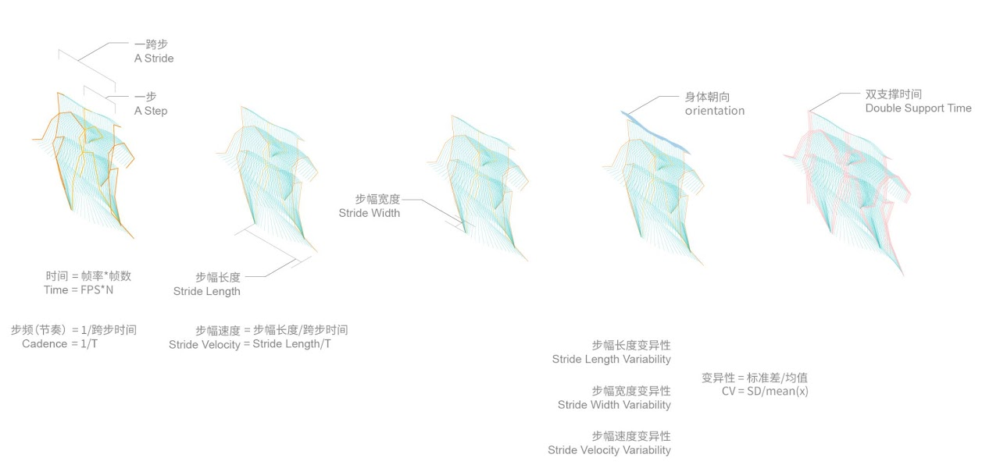
A Machine Vision Based Computational Approach to Micro-behavior in Public Space
AI for Architecture. CDAC 2024. Computational Design and Robotic Fabrication
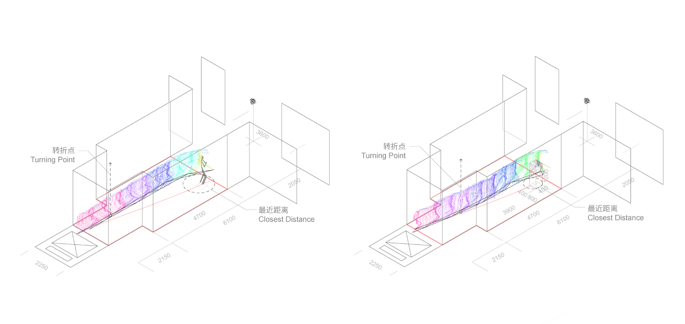
A Behavior-based Experimental Study of Peri-personal Space & Inter-personal Space
Architectural Science Review (A&HCI, JCR Q1)
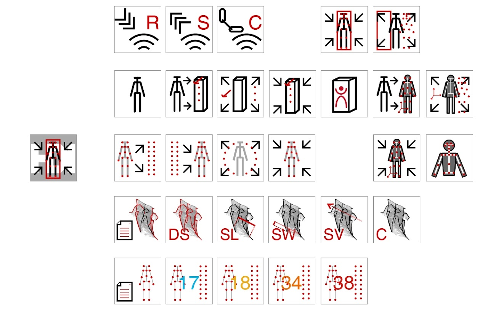
BodyAnalytics Grasshopper Toolkit for Behavioural Analysis and Interactive Design Applications
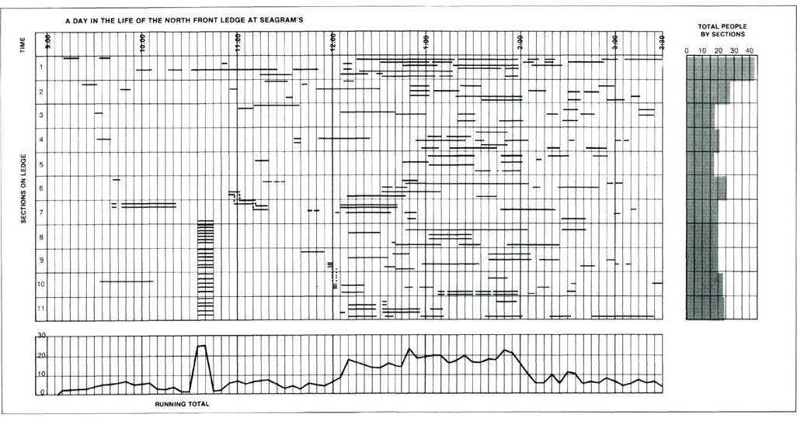
An Interactive Video-Tracking Method for Modelling Spatiotemporal Human Behaviours within Dynamic Zoning Geometries
CAADRIA 2024
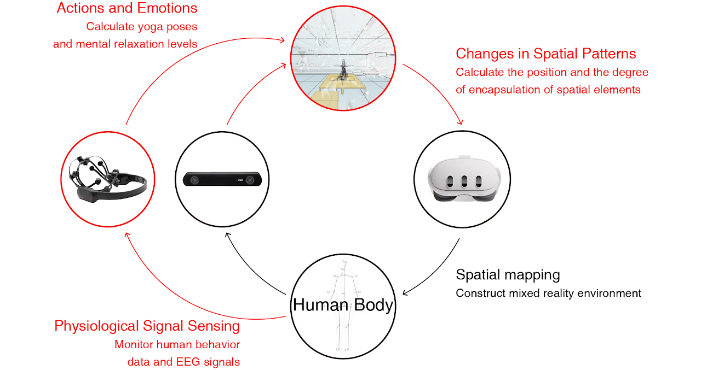
Simulating Interactive Architecture: A Behavior-based Interactive Design Platform
CAADRIA 2026
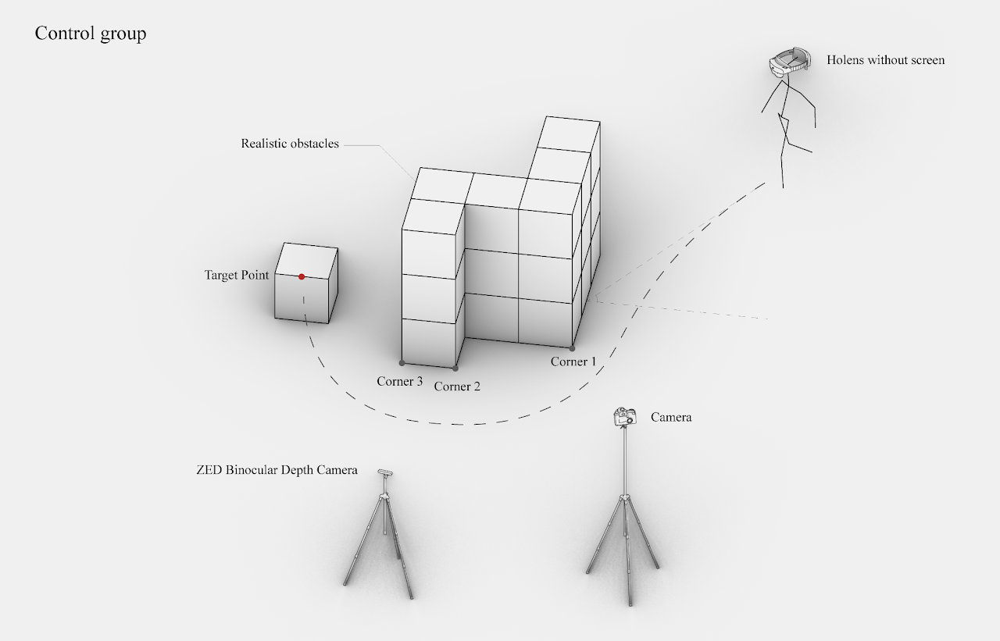
What Are the Differences in Behavior and Perception between AR Environments and Reality?
Under Review
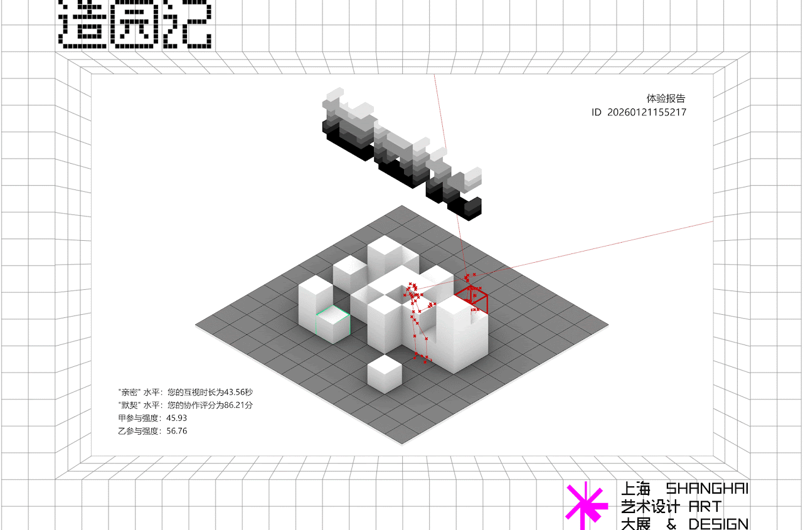
The Making of a Garden
An MR interactive installation at the Shanghai Art & Design exhibition in the China Art Museum
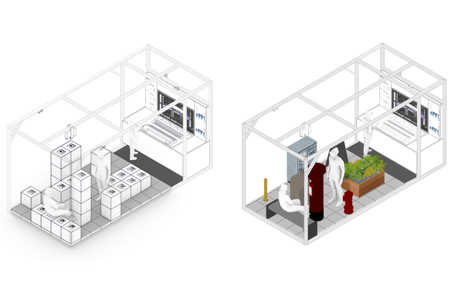
Intelligent MR Environments with Embodied Interaction
DigitalFUTURES 2026
WHAT'S MORE
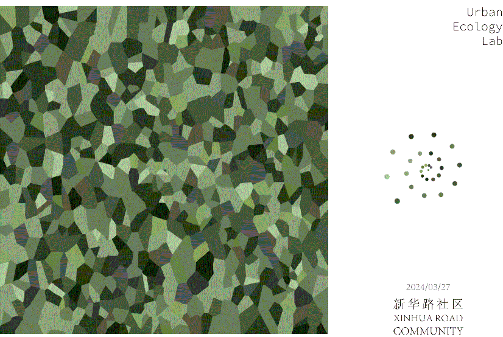
Community Garden Festival Booth: AI-powered Instant Plant Color Bookmark Generation
The Most Remote Tower: Topological Optimization of Tatlin's Monument to the Third International

Shanxi Cultural Heritage Study Tour: New Media Communication of Ancient Architecture
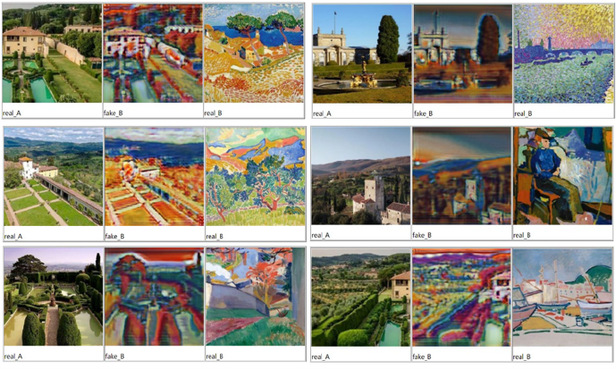
Neural Network Based Image Style Migration Study
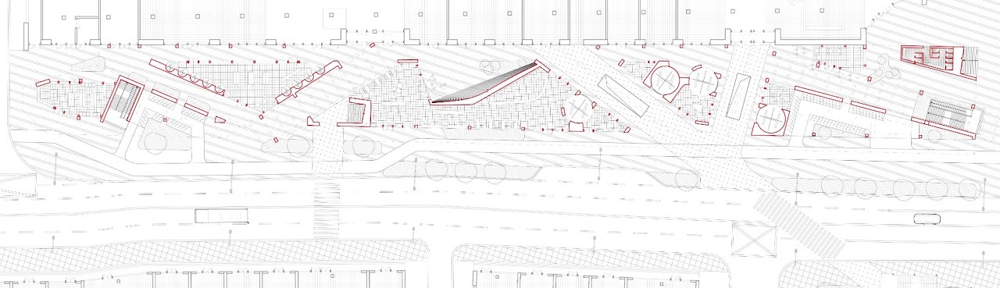
AirTOD - "Urban Hyperlink" Street
2024 TEAMZERO Award International Architecture Design Competition for College Students
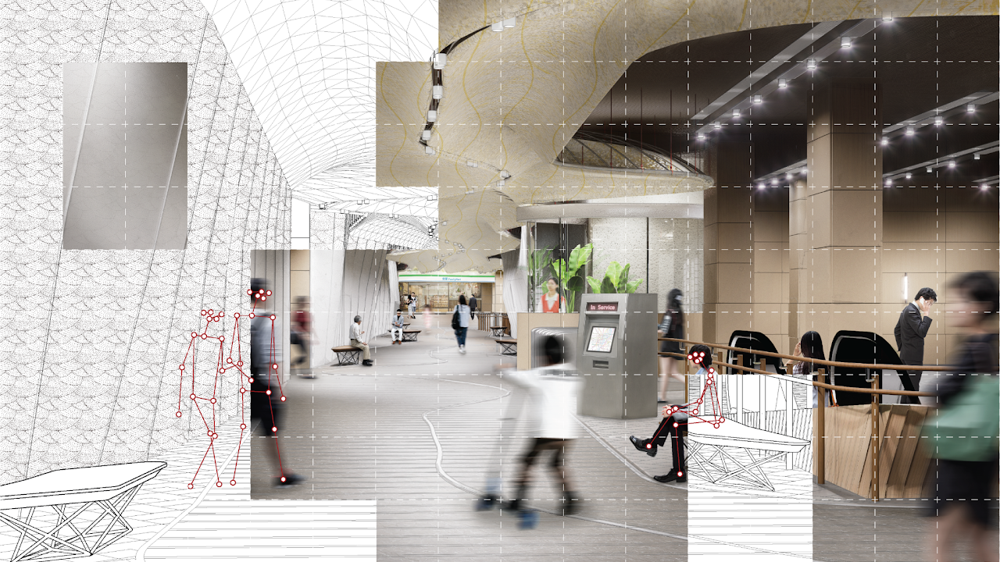
Study on the Improvement Design of Metro Station Spatial Walking Comfort Based on Micro-behavior Computation
Get in Touch